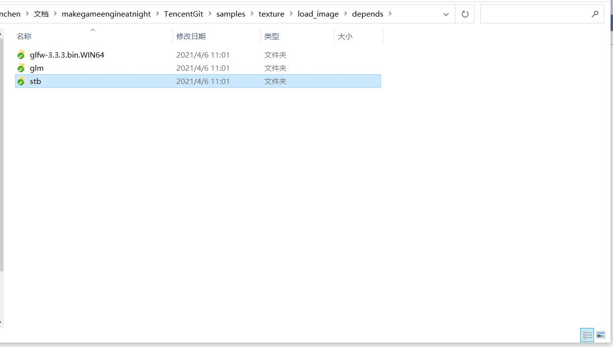
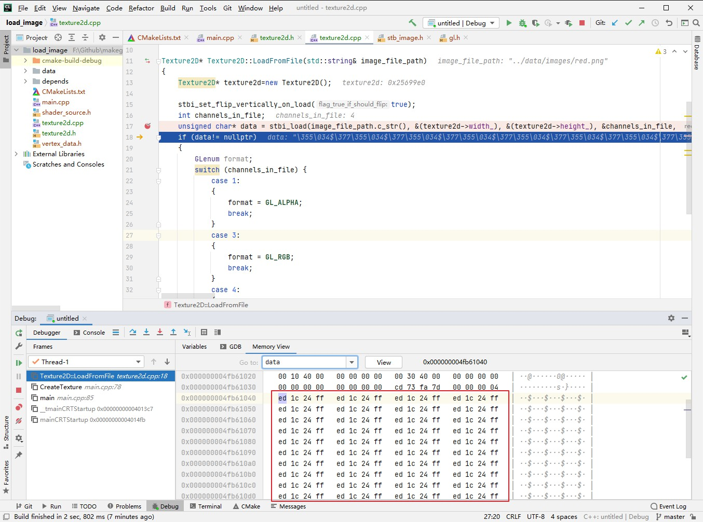

5.4 使用stb_image解析图片
CLion项目文件位于 samples\texture\load_image
前面介绍了.png、.jpg图片文件想要用于渲染，首先得加载到内存，然后解压得到RGB数据，然后才能将RGB数据上传到GPU用于渲染。
这一节来实现图片文件加载与解压。
1. 开源的图片解析库
目前各大游戏引擎常用的图片解析库是 FreeImage，支持几乎所有的图片格式，官网地址：
https://freeimage.sourceforge.io/index.html
支持图片格式多，意味着代码量大，我们暂时只需要加载 .png、.jpg，找个轻量的库就可以了。
一个绝佳的选择就是 stb_image。
std是一个单头文件开源库，每个头文件实现一种功能，官网：https://github.com/nothings/stb
2. 导入stb库
下载stb源代码，放到项目的depends目录下。

{kind=link}
这样就可以在项目中使用了。
3. 加载图片并解析
创建类Texture2D，管理图片相关接口。
在使用 stb_image 解析图片文件之前，先添加相关宏定义：
#define STB_IMAGE_IMPLEMENTATION
再导入头文件：
#include "stb/stb_image.h"
然后编写接口代码，加载图片文件:
Texture2D* Texture2D::LoadFromFile(std::string& image_file_path)
{
Texture2D* texture2d=new Texture2D();
stbi_set_flip_vertically_on_load(true);//翻转图片，解析出来的图片数据从左下角开始，这是因为OpenGL的纹理坐标起始点为左下角。
int channels_in_file;//通道数
unsigned char* data = stbi_load(image_file_path.c_str(), &(texture2d->width_), &(texture2d->height_), &channels_in_file, 0);
if (data!= nullptr)
{
//根据颜色通道数，判断颜色格式。
switch (channels_in_file) {
case 1:
{
texture2d->gl_texture_format_ = GL_ALPHA;
break;
}
case 3:
{
texture2d->gl_texture_format_ = GL_RGB;
break;
}
case 4:
{
texture2d->gl_texture_format_ = GL_RGBA;
break;
}
}
}
//释放图片文件内存
stbi_image_free(data);
return texture2d;
}
然后在main.cpp 中调用接口。
//创建Texture
void CreateTexture(std::string image_file_path)
{
Texture2D* texture2d=Texture2D::LoadFromFile(image_file_path);
}
int main(void)
{
init_opengl();
CreateTexture("../data/images/red.png");
compile_shader();
......
}
4. 解析结果验证
调用stbi_load解析图片成功后，返回图像RGB数据(data)、宽、高、通道数。
查看data内存，如下图： 
{kind=link}
可以看到都是重复的 ed 1c 24 ff，转换到十进制就是237 28 36 255，这正是上一节创建的红色图片的像素颜色值。
{kind=link}
这说明已经成功解析了.png格式图片，获取到了原始的RGB数据，下一步就可以上传到GPU中进行渲染。